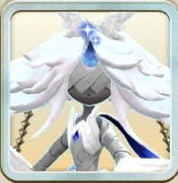

ワルキューレ

ワルキューレ
白オーラ
無機
主血統イルミネ
副血統ロード種
評価解説
- 2026年9月の3.5周年超スタフェスにて降臨したロードイルミネ。
- 由来は北欧神話。戦乙女またはヴァルキリーとも呼ばれる半神の存在で、神の使いらしい厳かで幻想的なビジュアルをしている。両サイドに巨大な刀剣をファンネルのように従えており独自のデザインになっている。
- ガッツ回復と移動速度は共にAと最高水準。モン類無機にとって重要な間合い適性は全てBランクと穴の無い初期値。王者覚醒による超ガッツ回復はイルミネにとって非常に心強い。
- 同時実装のMRエルブランシュの能力、MRライバルジュリアの「ライラックの花」による全ステ+30%と業物Lv6付与、さらにSSRロクショウがあれば「データ操作」の移動速度+4、命中回避率+30%によってバトル性能を大幅に向上出来る。
- 零距離R6白オーラ技「王武天覇」はダメS命中BガッツダウンBクリSSに20％追撃×4の超必殺技。ロード種のR6技の中ではパッと見可もなく不可もなくといった性能に見えるが、この技を持つだけでバトル中、全ての技命中時に独自のバフ”武天”（連撃与ダメ+10%、最大5つ重ね掛け）状態を付与できる。これにより技を当てていくほど火力が研ぎ澄まされていく。
- その自己バフに合わせて「ワルキューレアペンド」「ワルキューレハント」「横一閃」、さらにロード秘伝等での他の火力スキルまで合わせた場合、他の色では出せない超ダメージを叩き出せるだろう。ほぼ全弾クリティカルになるので相手が追撃対策出来ていないのなら即殺も出来る。
- また中距離R2技が「モーニングスター」から固有白技「王武星」に変化。元技より性能コスパともに若干良くなっており、セットしておくだけで王者覚醒中かつ劣勢なら撃つ技にプラズマ効果も乗った状態となる。発動条件が限定的なので弱いと思いきや、プラズマ効果の恩恵は主力技に追撃プラスが多い点にある。才能スキル「武装展開」や「ワルキューレアペンド」とのシナジーも非常に高く、攻撃ステ上昇+30%到達は容易い。自身オーラ一致技でもあるので、王武星自体で大きな火力を出す事も十分可能だ。
・オススメの能力としてはMRステラ「巫女の占い」、MRギフトン「ギフトンアボイド」、MRエスエル「エスエルスモーク」、SSRメタビー「バーサーク」、SSRシャルティア「蹂躙を開始しんす」、SSRハクヨウキ「九つの目」、SSRマリッジ「花嫁の祝福」、SSRアルカディアス「聖なる閃光」など。白の無機には有効な能力が軒並み揃っている。「フォースプラチナレンジ」も実戦でとても重宝する。
・かつてはローマスの環境を蹂躙したバトルの申し子イルミネ種。そのロードとあれば推して知るべしだが、ワルキューレ自体の絶対的なスペックの高さというよりは、むしろ同時実装のアシストカード能力のインフレっぷりでそのバトル性能を飛躍的に上げられていると言える。最新の能力を最大限享受出来て活かせる器を備えている、それこそがワルキューレの強さだ。
イルミネ種の技
技は血統ごとに共通です。イルミネ種が覚える技の一覧は血統ページにまとめています。